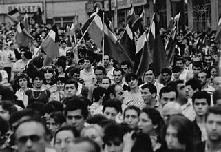
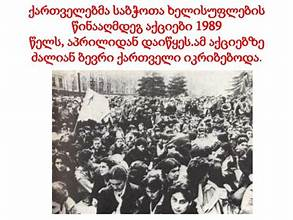
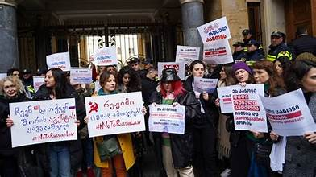
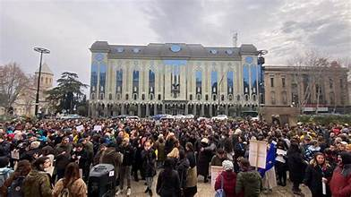

9 აპრილის ტრაგედია — 1989 წლის 9 აპრილს, თბილისში მომხდარი სისხლიანი მოვლენები, რაც გამოიხატა საბჭოთა არმიის მიერ ანტისაბჭოთა, საქართველოს წინაშე.
9 აპრილს საბჭოთა კავშირის ჯარი შემოვიდა საქართველოში რომელმაც სასტიკად დაარბია მშვიდობიანი მოსახლეობა, რის შედეგადაც დაიღუპა 21 და დაშავდა 427 ადამიანი. 9 აპრილის მოვლენებმა წყალგამყოფის როლი შეასრულა საქართველოს ეროვნულ-განმათავისუფლებელ მოძრაობაში. საქართველოს ძალიან დიდი ჭრილობა დაუტოვა სულში 9 აპრილის ტარაგედიამ
ჩვენმა მათავრობამ რომელმაც დიდი იმედებით და სიტყვებით შეგვამკო და გვითხრა ჩვენ ევროპაში ძალიან მალე შევალთ და ძალიან მალე მოვიხსნით რუსეთის ტვისრთსო, მაგის შესრულების მაგივრად მან გადაწყვიტა შემოეღო კანონი რომელიც ჩვენ არაფერში გვჭირდება და მაგ კანონით გზას გვიჭრის ევროპისა და ნათელი მომავლისიკენ (#არა რუსულ კანონს!!!)
დღეს საქართველომ გადაწყვიტა ისევ გაერთიანებულიყო და ერთად ისევ ისე როგორც 9 აპრილს შეწინააღმდეგებოდა რუსეთს და მის მონა მთვრობას რომელსაც უნდა დაგვამონოს და ძალით დაგვაბრუნოს იმ ბნელ წლებში საიდან გამოსვლასაც უამრავი ადამიანის გარდაცვალება და დაშავება მოჰყვა. (# არა რუსულ კანონს!!!)
დღეს ისევ თბილისში პარლამენტის წინ შევიკრიბეთ და ისევ ვებრძვით რუსეთს და მის კანონს რომელიც გვართმევს ნათელ მომავალს, ბედნიერ ცხოვრებასა და რაც ყველაზე მეტად გვიყვარს თავისუფლებას! ჩვენ ვებრძვით რუსეთს და მივიწევთ ევროპისკენ რომელიც ჩვენი ხსნა რუსეთისაგან! (#არა რუსულ კანონს!!!)